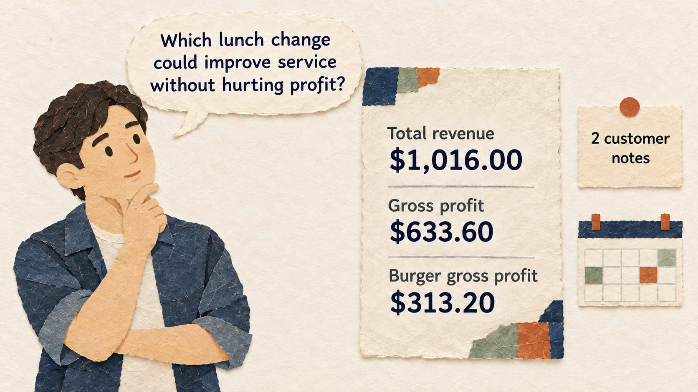

Situation
The problem
A restaurant owner has lunch sales and customer notes, but does not know which small change could improve service without hurting profit. The table contains clues, not a ready-made answer.

3 hours: 50-minute lesson, 10-minute break, 50-minute guided practice, 10-minute break, 50-minute applied practice, and 10-minute wrap-up.
A restaurant owner has lunch sales and customer notes, but does not know which small change could improve service without hurting profit. The table contains clues, not a ready-made answer.
Read the table, calculate and verify revenue and gross profit, separate facts from interpretations, and propose one small test.
Practice material: CSV: session_2_1_restaurant_sales.csv
The complete small practice dataset is reproduced here for spreadsheet work.
| day | item | units_sold | unit_price_USD | unit_food_cost_USD | customer_note |
|---|---|---|---|---|---|
| Monday | Burger | 18 | 9.00 | 3.60 | Popular at lunch |
| Monday | Salad | 10 | 8.00 | 2.80 | Asked for faster pickup |
| Monday | Wrap | 14 | 8.50 | 3.10 | Popular with office customers |
| Tuesday | Burger | 24 | 9.00 | 3.60 | Long lunch queue |
| Tuesday | Soup | 12 | 6.50 | 2.00 | Sold out at 1 PM |
| Wednesday | Salad | 8 | 8.00 | 2.80 | Customers asked for more dressing |
| Wednesday | Wrap | 18 | 8.50 | 3.10 | Popular at lunch |
| Wednesday | Burger | 16 | 9.00 | 3.60 | Long lunch queue |
Fictional instructional data from data/session_2_1_restaurant_sales.csv.
Keep each concept tied to the practical decision.
These examples come from the current session scenario.
Here is our restaurant data. What should we improve?
Add all sales rows, tell me the exact profit, and guarantee your total is correct.
Keep the source, task, constraints, and output check visible.
Use only the attached Session 2.1 CSV. List what each column measures. Separate facts visible in the rows from questions the data cannot answer. Do not calculate totals or claim a cause. End with three questions for the owner.
Use the eight Session 2.1 rows and these spreadsheet-checked results: total revenue $1,016.00, gross profit $633.60, Burger gross profit $313.20. Give one demand fact, one profit fact, and one service clue. Suggest one small two-week test and one measure. Do not recalculate. Label facts and interpretations separately.
Use the complete case and instructions from the session Markdown.
Use the complete case and instructions from the session Markdown.
Check the output before sharing or acting on it.